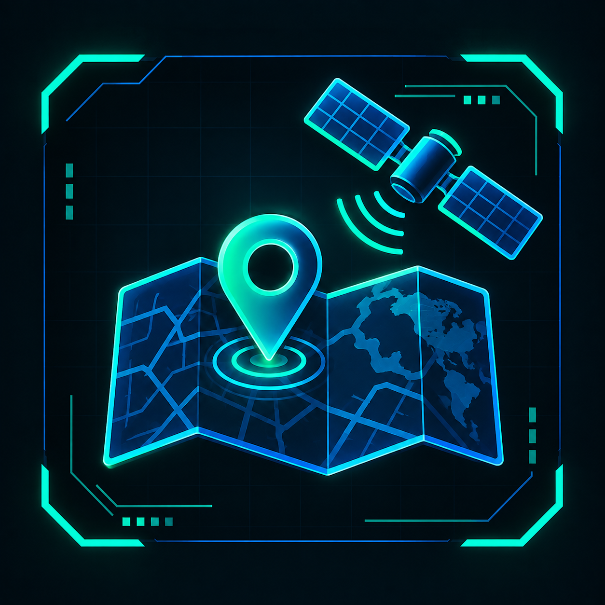

¿Qué es OSINT?
OSINT significa Open Source Intelligence, o Inteligencia de Fuentes Abiertas.
Es el proceso de buscar, recopilar, verificar y analizar información disponible públicamente para obtener datos útiles para una investigación.
La información puede encontrarse en diferentes fuentes, como sitios web, redes sociales, noticias, mapas, documentos públicos y otras plataformas disponibles.
Fuentes de información
Las investigaciones OSINT utilizan información disponible públicamente en diferentes medios y plataformas.

Redes sociales
 Noticias y medios digitales
Noticias y medios digitales

Mapas e imágenes satelitalesProceso de investigacion
Buscar
Localizar información relacionada con el objetivo de la investigación utilizando diferentes fuentes.
Técnicas de OSINT
Las investigaciones OSINT utilizan diferentes técnicas para localizar, analizar y relacionar información disponible públicamente.
- Búsqueda avanzada: utilizar operadores y filtros para obtener resultados más específicos en los motores de búsqueda.
- Búsqueda de imágenes: analizar imágenes y utilizar búsquedas inversas para encontrar información relacionada con una fotografía.
- Geolocalización: identificar una ubicación utilizando elementos visibles en fotografías, mapas, edificios, calles o paisajes.
- Análisis de redes sociales: estudiar información publicada públicamente y relacionar diferentes datos disponibles.
- Análisis de metadatos: revisar los datos asociados a determinados archivos, como imágenes o documentos, cuando estos datos están disponibles.
- Verificación cruzada: comparar información obtenida desde diferentes fuentes para comprobar su consistencia y confiabilidad.
Herramientas y aplicaciones de OSINT
Existen diferentes herramientas que facilitan la búsqueda, recopilación, verificación y análisis de información disponible públicamente.
- Motores de búsqueda: permiten localizar información mediante palabras clave, filtros y operadores de búsqueda.
- Herramientas de búsqueda de imágenes: permiten encontrar imágenes similares o localizar posibles fuentes originales.
- Herramientas de geolocalización: ayudan a analizar mapas, ubicaciones, calles y elementos geográficos presentes en una imagen.
- Herramientas de análisis de dominios: permiten consultar información pública relacionada con dominios y sitios web.
- Herramientas de análisis de redes: permiten visualizar y relacionar diferentes datos para identificar conexiones entre información pública.
- Herramientas de metadatos: permiten revisar información técnica asociada a determinados archivos cuando estos datos se encuentran disponibles.
¿Para qué se utiliza OSINT?
OSINT puede utilizarse en diferentes áreas para obtener, analizar y verificar información de fuentes abiertas.
- Ciberseguridad
- Investigación periodística
- Investigación académica
- Análisis de amenazas
- Verificación de información
- Investigación empresarial
- Geolocalización
Verificación y análisis de información
Verificación
Encontrar información no significa que sea verdadera. Es importante comprobar los datos antes de utilizarlos o compartirlos.
- Identificar la fuente
- Revisar la fecha
- Comparar fuentes
- Analizar el contexto
- Confirmar los datos
Ética y uso responsable
El uso de técnicas OSINT debe realizarse de manera responsable y respetando la privacidad.
- Respetar la privacidad
- Verificar la información
- Respetar las leyes
- Usar fuentes públicas responsablemente
- Evitar perjudicar a otras personas